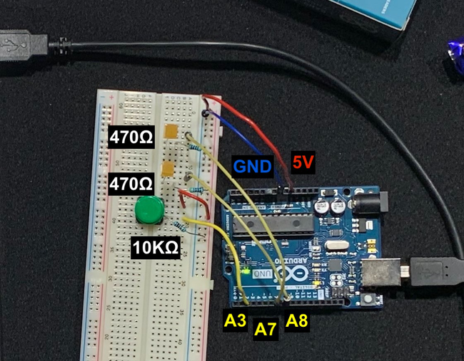

Week 1 - Arduino Basics
I connected the pins to Arduino as such:

Code
Copied!#define BUTTON 2 #define LED_0 7 #define LED_1 8 int buttonValue; int ledState = 0; int lock = 0; void setup() { pinMode(BUTTON, INPUT); pinMode(LED_0, OUTPUT); pinMode(LED_1, OUTPUT); } void loop() { buttonValue = digitalRead(BUTTON); if (lock == 0 && buttonValue == HIGH) { lock = 1; // hold the lock delay(5); // sleep for 5ms /* do a second check after 5ms. this shouldn't be necessary with the lock in place, but the button seems too sensitive otherwise */ if (buttonValue == HIGH) { ledState++; if (ledState > 2) { ledState = 0; } } } // release the lock if we're not pressing the button if (buttonValue == LOW) { lock = 0; } // switch-case (maybe) a bit more readable than if-else-if switch(ledState) { case 1: digitalWrite(LED_0, HIGH); break; case 2: digitalWrite(LED_1, HIGH); break; default: digitalWrite(LED_0, LOW); digitalWrite(LED_1, LOW); break; } delay(5); }
I check that the button is being held two times with 5ms in-between (so that the button has hopefully been held for at least 5ms) at line 26.
This isn't strictly necessary, but as you can maybe see from the video below - the button I have feels a bit too sensitive. I felt it improved the control a little bit.
// END